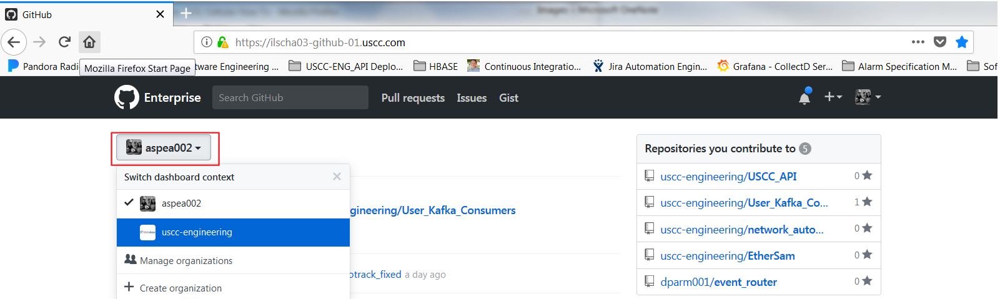
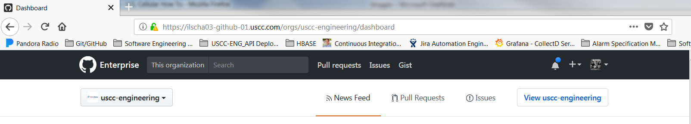
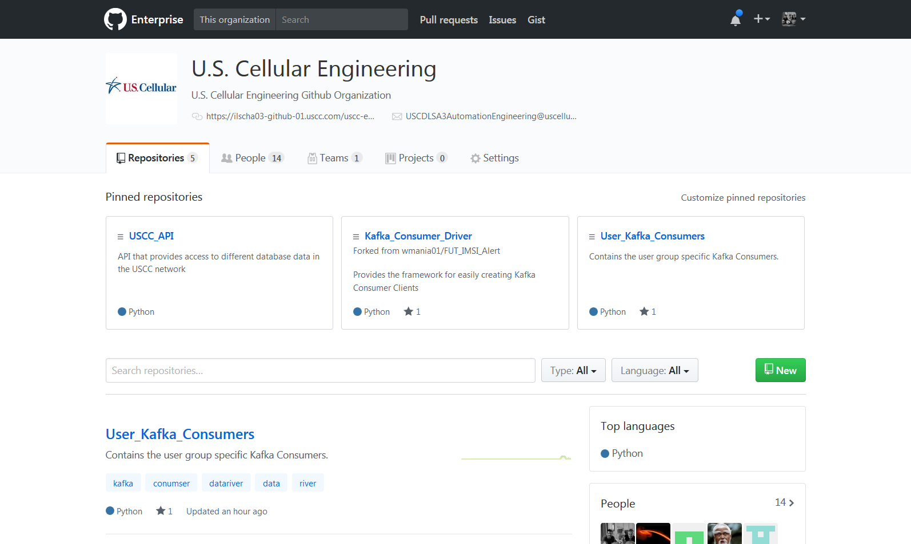

USCC Engineering Github Organization
Under our GitHub Enterprise account we have a U.S. Cellular Engineering organization. This organization serves many purposes, but most importantly the ability to house all of our Automations being developed for the business in an environment that gives us permission control.
Minimally this allows us to bring in outside consultants and give them access to our GitHub Enterprise account for any development they do without giving them full access to any repositories that could contain sensitive information or code. To facilitate this we need to require from everyone to create work related repositories under our organization.
Below are instructions on to request access as well as some useful links to documentation within Github about Organizations.
- Email Andrew Spear and in the body of the email specify your GitHub username used to log into our GitHub Enterprise Account.
- Once you have been added you will be able to access the organizations page.
- Links to GitHub help about organizations
- Difference between user and organization accounts
- Ways you can get to the organizations page.
- Checkout the Github help doc to see how to get to it.
-
You can also switch you dashboard feed after you login, which defaults to your user account, to see the dashboard for the organization. This gives you the benefit to see a news feed that you can customize related to the organization just like your user account news feed.
-
After logging into your account your username on the top left corner will become a drop down once you have been added to the organization. In which you can select the organization to Switch dashboard context 
-
Now you can access the organization main page by clicking the View uscc-engineering near the top right hand corner. 
-
Now you should see the U.S. Cellular Engineering main page. Now you can explore the Repositories, People, Teams, and more that are going on inside the organization. The search bar on the top will search within the organization or you can just scroll down the page on whatever tab your on to explore what people are working on. 
-
- Links to GitHub help about organizations
{kind=link}
{kind=link}
{kind=link}